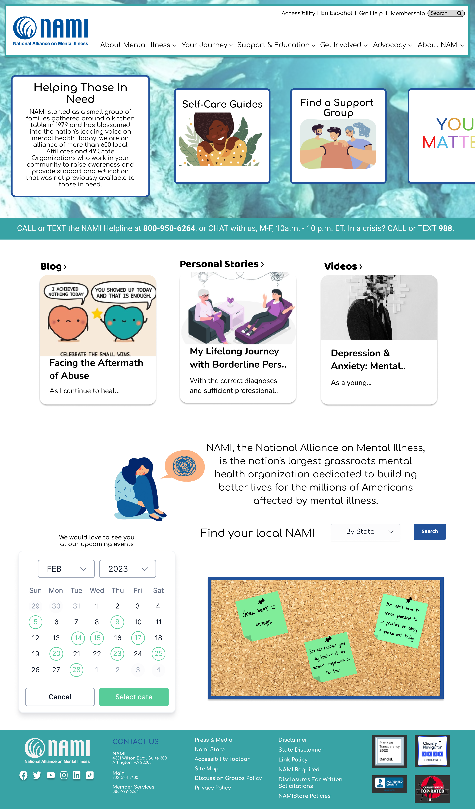
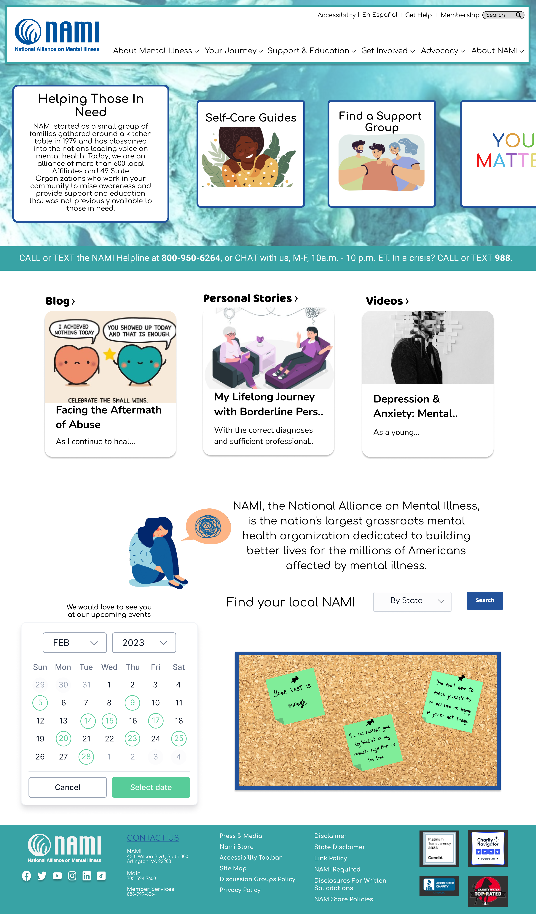

Research
As researchers, it’s important to understand who the website users are and get to know their thoughts and feelings on their website interaction experiences. Research began with our team of 4 creating a proto persona and empathy map to kick start the new project. Next we conducted 5 user interviews, a survey in which 36 people completed, and a competitor analysis. The competitor analysis was broken down into two direct competitors (mental health nonprofits) and two indirect competitors (social media platforms).
KNOW
AND
UNDERSTAND
YOUR
USERS

After analyzing our notes we organized an affinity diagram. The common themes we extracted from our research were placed into categories where we could continue to further our knowledge about the typical user of the NAMI website. This was where Monroe Manchester was brought to life. Creating the user persona allowed us to visualize a realistic representation of a NAMI website user. Finally, before moving to the next phase we conducted a SWOT (Strengths, Weaknesses, Opportunities, and Threats) analysis to develop a plan for our future strategies and completed a heuristic evaluation on the original NAMI website.


Definition
Problem Statement
We believe renovating the NAMI website to a safe and welcoming place for individuals from a variety of backgrounds, will achieve allowing individuals to receive the appropriate support for their wants and needs.
Value Proposition
Our organization NAMI is developing an improved user experience to help individuals receive the appropriate care they need to decrease the stigma around looking for help. We’re better because we cover a broad spectrum of mental illnesses. We’re believable because everyone is welcome and accepted.
Ideation
We sorted the “I like, I Wish, What If” thoughts using a feature prioritization matrix. Next a story board was created keeping Monroe in mind. Then a site map was organized before moving on to prototyping and testing.


Prototyping and Testing


Key Insights to Lo-Fi Testing

Further usability testing was conducted on 5 users on the hi-fidelity prototype to ensure we captured the perfect design based off of all of our findings.

 



Conclusion
We believe we were able to harness the thoughts and emotions of a NAMI website user and improve their experience when visiting the website. After two weeks of working on the project our time had come to an end, but listed below are future opportunities we are considering.
Attempt another outreach to stakeholders to learn more about their website statistics and share our designs.
Redesign more secondary and tertiary pages using previous usability notes.
Possible iterations on calendar based off of attendance of events.